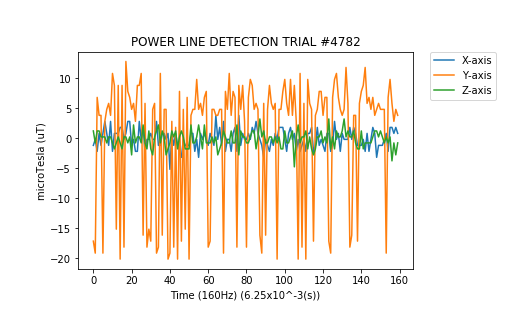

Project Report¶
Introduction¶
The purpose of this project was to explore the feasibility and viablity in the detection of variation in the magnetic fields surrounding the drill head for the purpose of avoiding damage to the drill, evading previously placed utlities, and to determine if such utlities are composed of current-carrying wire.
Method & Procedure¶
When conducting tests, the following rules remained true.
- The wire was suspended approximatley 1 inch above the plane of the magnetometer.
- The magnetometer was always positioned directly undernearth (0.0m) the wire at the start of each test cycle and moved outward as needed.
- The electronics used to pull the Amperage were turned off between all tests and were allowed to level out once turned back on.
For all trials and tests, a combination of the following electronics were used to achieve the desired Amperages.
- 7 Amps – Industrial Drum Fan
- 13.5 Amps – Industrial Drum Fan and Shop Vac
- 19.5 Amps – Industrial Drum Fan and 2 Shop Vacs
Procedure:
Download/Launch Visual Studio Code and Jupyter Notebook.
Import/Open scripts from repository into their respective IDE.
- Files with extensions of .ino belong in VSC and all other .py and .ipynb belong in a Jupyter Notebook directory.
Upload the script in Visual Studio Code to the Espressif micro controller.
- Download required Libraries if prompted.
Restart/Launch the Jupyter Notebook kernal.
- Under the ‘Kernal’ tab, select ‘Restart & Clear Output’ than click play on all cells, in order, once previous output clears.
Connect the micro controller to your computer via USB and HMC5883L via wires.
- Place micro controller in desired location.
Follow setup instructions displayed by Jupyter.
- Choose ‘STARTIONARY_MODE’ to display and save the data from each test.
- Choose ‘CONTINUOUS_MODE’ to have a continuous read out of the 60Hz strength compared to background noise.
Let program run for displayed amount of time, save the file, and repeat last two bullet points.
All Files/Tables/Graphs are saved in the same directory as the program, in a folder called ‘Saves’.
Results¶
The following comparisons are based off numbers calculated using Ampere’s Law at http://hyperphysics.phy-astr.gsu.edu/hbase/magnetic/magcur.html. By using the equations and calulator on this site, some baseline numbers were developed that this project aimed to replicate and prove.
Values listed under 7, 13.5, and 19.5 have units of microTeslas (uT)
1 Guass = 100 microTesla
Predicted values using Ampere’s Law
| Distance(m) | 7 Amps | 13.5 Amps | 19.5 Amps |
|---|---|---|---|
| 0.00 | 140 | 270 | 390 |
| 0.05 | 28 | 54 | 78 |
| 0.10 | 14 | 27 | 39 |
| 0.15 | 9 | 18 | 26 |
| 0.20 | 7 | 14 | 20 |
Experimental values obtained from tests
| Distance(m) | 7 Amps | 13.5 Amps | 19.5 Amps |
|---|---|---|---|
| 0.00 | 75 | 120 | 150 |
| 0.05 | 7 | 12 | 18 |
| 0.10 | 1 | 3 | 3 |
| 0.15 | — | 2 | 2 |
| 0.20 | — | — | 2 |
With the Amperage held constant for each test, 10 trials were conducted at the same distance before being moved farther out. The above numbers are the rounded average of all 10 trials at that distance. For clarity, the following chart is a condensed depiction of how trials and data were recorded.
| Trial # | Distance(m) | Amperage(A) | microTesla(uT) |
|---|---|---|---|
| 5625 | 0.00 | 19.5 | +– 150 |
| 7431 | 0.00 | 19.5 | +– 150 |
| 3843 | 0.00 | 19.5 | +– 150 |
| 4897 | 0.05 | 19.5 | +– 18 |
| 727 | 0.05 | 19.5 | +– 16 |
| 1420 | 0.05 | 19.6 | +– 17 |
| 3193 | 0.10 | 19.6 | +– 3 |
| 5312 | 0.10 | 19.7 | +– 2 |
| 8622 | 0.10 | 19.7 | +– 3 |
| 3744 | 0.15 | 19.7 | +– 2 |
| 4928 | 0.15 | 19.7 | +– 2 |
| 5965 | 0.15 | 19.7 | +– 2 |
| 1349 | 0.20 | 19.6 | +– 2 |
| 7592 | 0.20 | 19.7 | +– 2 |
| 8499 | 0.20 | 19.7 | +– 2 |
The following table illistrates the detection of sine waves for a current-carrying wire’s magnetic field at varying distances and amperages. Click a picture to display a higher resolution version.
| Meters | 7 Amps | 13.5 Amps | 19.5 Amps |
|---|---|---|---|
| 0.00 | |||
| 0.05 | |||
| 0.10 |  | ||
| 0.15 | NA | ||
| 0.20 | NA | NA |
{kind=link}
{kind=link}
{kind=link}
{kind=link}
{kind=link}
{kind=link}
{kind=link}
{kind=link}
{kind=link}
{kind=link}
{kind=link}
{kind=link}
The following table is working with the same data as above, but has had a Fast Fouier Transform (FFT) applied to all three axes which changed the signal from the time domain to the frequency domain. This gave a clear indication of what frequencies a certain signal was composed of and the magnitude of all frequencies 0-60Hz.
| Meters | 7 Amps | 13.5 Amps | 19.5 Amps |
|---|---|---|---|
| 0.00 | |||
| 0.05 | |||
| 0.10 |  |
||
| 0.15 | NA | ||
| 0.20 | NA | NA |
{kind=link}
{kind=link}
{kind=link}
{kind=link}
{kind=link}
{kind=link}
{kind=link}
{kind=link}
{kind=link}
{kind=link}
{kind=link}
Conclusion
In conclusion, based on the collected data, it is possible for magnetometers sampling at over 120Hz to detect and distinguish a 60Hz signal being transfered through the magnetic field generated by a current-carrying wire up to a distance. That distance is directly related and dependent upon the amount of current being pulled through the wire. This is shown through the graphs above in the form of raw data from the changing magnetic field and through an FFT altered version to show the composition of frequencies that make up the magnetic field over a 1 second duration.
After comparisons between the theroetical and experimental values, there is clear error that is offsetting the experimental values. The average percentage error for the trial distances were: 56.9% for 0.0m, 76.9% for 0.05m, 91.3% for 0.1m, 92.5% for 0.15m, and 95.1% for 0.2m. This logarithmic type behavior discredits human error due to their being no sporadic changes between trials. This type of error points toward the material composition of the wire used in the experiment and or surrounding environment causing a dampening affect on the magnetic field generated by the observed wire.